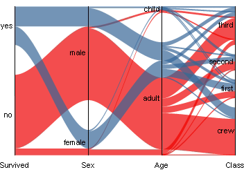
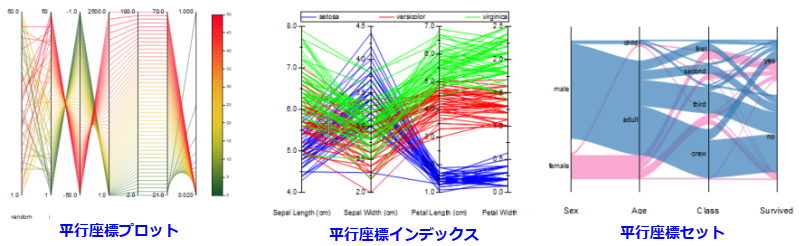

平行座標セット
平行座標セット
- 
必要なデータ
少なくとも2つのY列、あるいは、その部分領域を選択する必要があります。プロット属性は問いません。選択された列はY列として扱われます。
グラフ作成
- データを選択します。
- 作図>カテゴリカル:平行座標セット/重み付きパラレルセットを選択します。
平行座標プロットの編集について詳細情報を、次のトピックを参照してください。
テンプレート
ParallelSet.otpu (EXEフォルダにインストールされています。)
Notes
Originは3種類の平行座標タイプをサポートしています。
- 
- 基本的な平行座標プロット (作図 > 2D: 平行座標プロット: 平行座標プロット)は、連続的な(数値の)変数とカラースケールを使用します。
- 並行座標プロット(作図 > 2D: 平行座標プロット: 平行座標インデックス)は、同様に連続値をプロットしますが、列(カテゴリカル変数列)をグループ化し凡例とグラフカラーを適用します。
- 平行座標セット(作図> 2D: 平行座標プロット: 平行座標セット/重み付きパラレルセット)は、軸ごとのカテゴリカル変数をグラフにします。
カテゴリカルなデータしかない場合、平行座標セットをプロットするには、作図：カテゴリカル： 平行座標セットを選択してこれらのフローをプロットします。軸間のリンクの幅は、リンク番号によって決まります。データ（複数のラベル列と値列を持つワークシート）を要約した場合は、作図：カテゴリカル：重み付きパラレルセットを選択してフローをプロットして重みを付けます。軸間のリンクの幅は、最後の値列によって決定されます。
値の列を平行座標プロットにドラッグアンドドロップすると、新しい列が最後に追加されます。